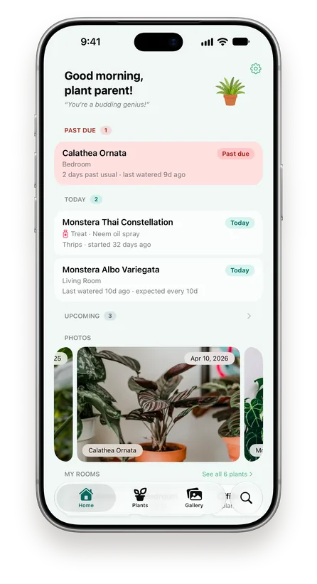
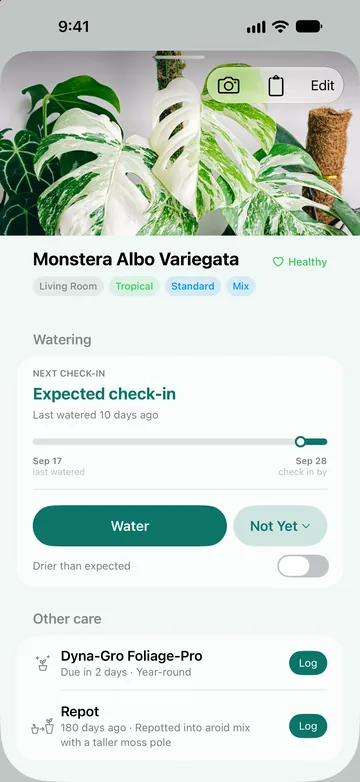
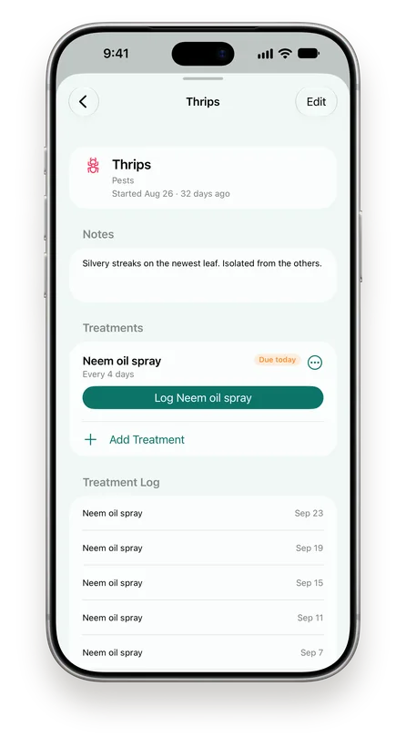
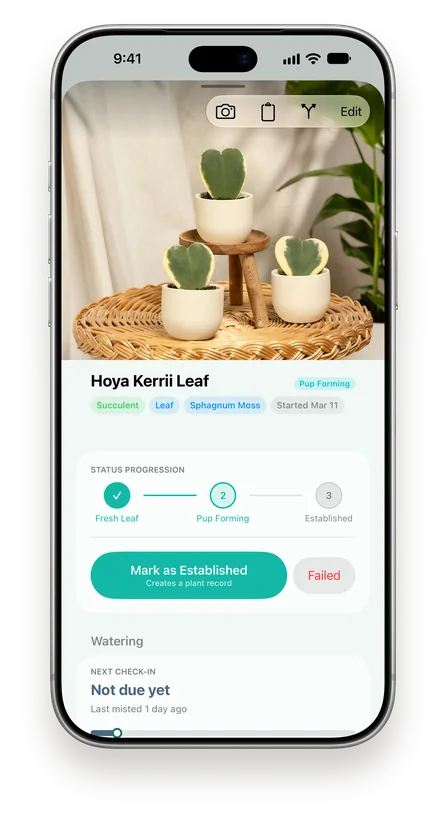
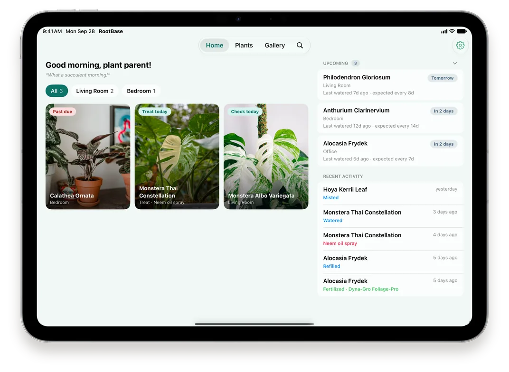

Homebase for your roots
Your plants deserve a proper schedule.
RootBase learns how your plants actually dry out, not just on a fixed timer. Built by a plant nerd, for plant nerds.
What makes it different
Built for how plants actually live.
-
Adaptive Check-ins
Every plant dries out differently. RootBase figures out your plant's rhythm and tells you when it's actually time to water, not just on a fixed timer.
-
Full Care History
Remember what you did and when. Every watering, every fertilizer, every repot. All logged and easy to look back on when something goes wrong.
-
Full Data Ownership
Your collection, your data. Everything lives on your device, and in your own iCloud if you turn on sync. No RootBase account, no servers of ours, no subscription. Export a backup and take it with you anytime.
-
Health Management
Something looks off? Log the issue, from thrips to root rot, and set treatments that repeat every few days or every few waterings, rotating products if you like. Resolved issues stay on record so you know what worked.
-
Propagations
Track cuttings, leaves, seeds, divisions and more from fresh start to planted. Link each one to its parent plant, and turn it into a plant of its own when it’s ready.
-
Photo Gallery
Attach photos to any plant and watch it change over time. Nothing beats seeing a new leaf unfurl compared to where it started.
A closer look
See it in action.
Home
Know what needs you today.
Past due, today and upcoming, each with the reason it’s there. Swipe right to log a watering, or left to push it back a few days.

Plant detail
Every plant, its own rhythm.
See where a plant sits in its check-in window, log a watering in one tap, and keep fertilizer and repotting right beside it.

Health
Treat problems until they’re gone.
Log an issue, schedule a treatment every few days or waterings, and record each application with a tap. The treatment log shows exactly what you did.

Propagations
Watch them take root.
Move each propagation through its stages, from fresh leaf to established, and turn it into a plant of its own when it’s ready.

iPad
Room to grow on iPad.
Everything due today as a photo grid you can filter by room, with what’s coming up beside it. Touch and hold a plant to log it.

How check-ins work
A schedule that learns from you.
-
Start with a good guess
Pick a plant type, from cactus to carnivorous, and RootBase starts from that type’s usual interval, or one you set yourself.
-
Log what you actually do
Every watering teaches it how fast that plant dries out in your home, with recent waterings counting the most.
-
Check in within a window
Instead of a single due date, you get a window sized by how consistent that plant has been. Not ready yet? Push it back without skewing what it learned.
-
Adjust when things change
Repot a plant or switch how you water it, and predictions loosen until they settle again. Home tells you why each plant is there.
Last watered 9d ago · expected every 8dRecently repotted · predictions adjusting
And the rest
Everything else a collection needs.
Fertilizer schedules
Every few days or every few waterings, only in your growing season, and logged together with a watering.
Care reminders
A daily check-in and an overdue alert, each at a time you choose.
Home Screen widget
Today’s plant care at a glance, in green or matched to your theme.
iPhone and iPad
Layouts built for each, kept the same by iCloud Sync.
Search everything
Find plants, propagations, rooms and photos, even the ones you’ve gifted.
A camera for plants
Tap to focus, auto macro and a self-timer, right inside the app.
Backups you control
A week of daily snapshots, plus a full export whenever you want one.
Share a plant’s story
Copy a plant’s profile and care history to ask an AI assistant or a fellow grower.
Your plants are waiting.
Now available on the App Store. Free to download.